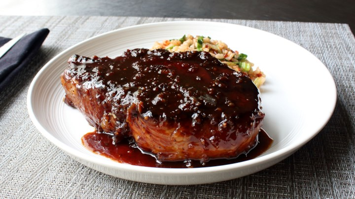

Sticky Garlic Pork Chops
Originally from: Food Wishes

Ingredients
- 1/3 cup light brown sugar
- 6 cloves garlic
- 1/4 rice vinegar
- 2 Tbl fish sauce
- 1 Tbl soy sauce
- 1 Tbl ketchup
- 1/2 tsp black pepper
- 2 tsp hot sauce
- 2 10 oz pork chops
Directions
- Combine ingredients, and marinate in fridge 1 to 2 hours
- Remove pork from marinade and wipe away excess sauce
- Cook in oiled nonstick skillet over medium heat. Let each side get nicely carmelized, around 5 minutes per side
- Remove pork and set aside to rest. Add marinade into pan and allow to reduce.
- Return pork to skillet until done (around 145°)
Notes
-
2020-08-09 - Made for first time following recipe. Used normal datu puti vinegar and patis with two decent size pork chops. Had some sauce left at end, but was very sticky and thick since had mostly reduced away. If more sauce is desired could increase soy in the marinade. Very easy and turned out great.